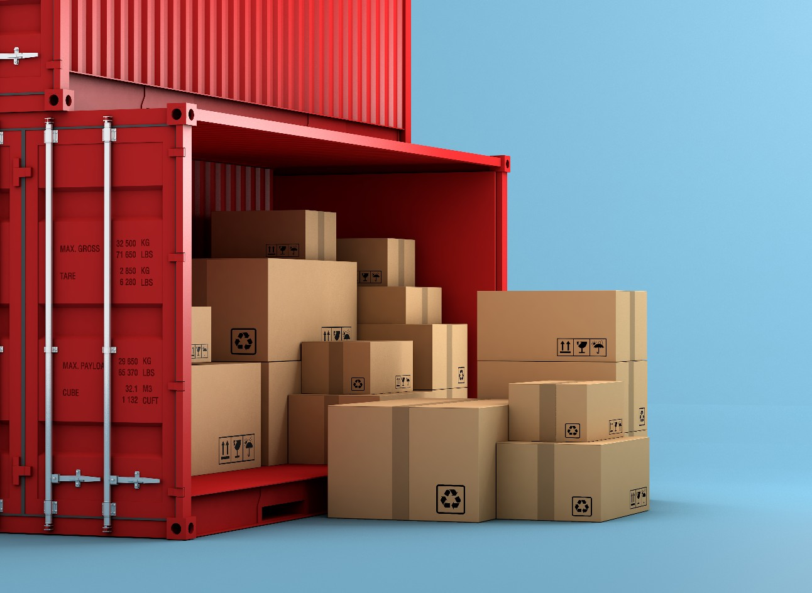

Introdução
O comércio exterior é uma técnica de negociação, dentro e fora do país, usando como parâmetro meios de transporte, logística e relações internacionais. Como todo país necessita de algumas matérias primas ou até mesmo de produtos já prontos para entrega, que muitas das vezes não é de domínio do território local. O comércio exterior visa suprir essa carência através da exportação e importação.

Hoje em dia, já encontramos muitas empresas que ingressaram de forma doméstica e hoje tem se
transformado aos poucos em empresas internacionais, como por exemplo a EMBRAER, empresa está
que nos concedeu material de estudo para efetuar a pesquisa de campo, bem como a entrevista
falando sobre diversas vantagens e desvantagens do comércio exterior.
No Brasil
Este ramo pode ser visto no Brasil com o pontapé inicial no século XV, devido a matéria prima o pau-Brasil, e logo após no século XI se inaugurou a Companhia Geral de Comércio do Brasil. Segundo Fernandes, em 2022, na data de 28 de janeiro de 1808, marco que se comemora o dia do profissional em comércio exterior, D. João VI decretou a abertura dos Portos às Nações Amigas de Portugal beneficiando a Grã Bretanha. Esta carta régia extinguiu o Pacto Colonial da época, e trouxe diversas mercadorias inglesas ao nosso mercado.
O Brasil representa a 24ª maior economia exportadora do mundo. No ano de 2016, o país exportou cerca de 191 bilhões de dólares e importou 140 bilhões de dólares, resultando em um saldo comercial positivo de 50,7 bilhões de dólares. As exportações realizadas pelo Brasil são destinadas, principalmente, a países como China, Estados Unidos, Argentina, Holanda e Alemanha.
Em relação às atividades importadoras, no mês de janeiro de 2019, as importações brasileiras somaram US$ 14,201 bilhões. Entre janeiro de 2017 e janeiro de 2018, as importações realizadas pelo Brasil somaram US$ 152,753 bilhões. Entre os principais países que exportam para o Brasil, podemos citar os Estados Unidos, China, Alemanha, Argentina e Nigéria.
Exportação
A exportação é a venda de bens e serviços para um determinado país, essa exportação pode ser feita de maneira direta ou indireta, isso implica na questão de ser comercializado direto pelo Fabricantes ou por trades.
“A exportação também poderá ser realizada tanto de forma definitiva quanto temporária”.
- KEEDI, 2011, pág. 21,
Modo Geral
De maneira definitiva a mercadoria se torna parte do relatório de importação do país recebedor, já a temporária tem prazo para retornar ao país de origem. Independente dos fatores, as mercadorias podem ir com ou sem a cobertura cambial.
A diversificação de mercadoria, segurança por lidar com diversos comércios externos evitando possíveis crises do comércio local. Isso aumenta o leque de possibilidades e de possíveis empresas compradoras. O que gera novos empregos e o crescimento da demanda na área de logística da empresa. Gera competitividade, devido a redução de custo fixo, acompanhado da melhora de recursos humanos e tecnológicos. Tendo em vista que o mercado exterior exige produtos com uma qualidade elevada. Como KEEDI, 2011, pág. 23, “(...) a exportação exige produtos melhor elaborados para atendimento de mercados mais exigentes.”.nte, a países como China, Estados Unidos, Argentina, Holanda e Alemanha.
Ter uma marca conhecida internacionalmente, a torna cada vez mais forte, se torna necessário muita das vezes a criação de filiais, a atuação com um financeiro forte, pois as moedas estrangeiras evitam a desvalorização quando a empresa é refém da moeda local. Isto como diz KEEDI, 2011, pág. 23, “(...) podendo colocá-los em posição de destaque no mercado internacional.” Ele deixa claro que uma empresa que trabalha no ramo se destaca de maneira natural e com uma estrutura sólida e adequada.
Modal aéreo
As normas para este modal são regulamentadas pela IATA (International Air Traffic Association) e ICAO (International Civil Aviation Organization), entidades de ações mundiais, não é obrigatório se associar a elas, mas deve se ter suas normas como parâmetro. Através desta associação as empresas de aeronaves conseguem cooperar uma com a outra e oferecer um padrão de alto nível.
O serviço pode ser oferecido em leasing ou fretamento, tudo depende do volume da carga e da sua urgência (tempo de entrega). O agente de carga aérea deve estar devidamente registrado na ANAC (Agência Nacional de Aviação Civil) e não atua de maneira fixa como no modal marítimo, o que torna o profissional mais Iresponsável, trazendo segurança. Esses agentes pode se registrar como aprovado pela IATA, sendo está a maneira adequada, não sendo desta forma se perde a credibilidade.
Este agente também leva como responsabilidade a emissão de documentos de transporte, com emissão de dois conhecimentos de embarque AWB (Air WayBill), é um documento de transporte não negociável que abrange o frete de carga de aeroporto para aeroporto. Ao aceitar um frete, um agente de carga IATA está agindo em nome da transportadora cujo AWB é emitido. Ele é remunerado com base no frete agenciado e consolidação da carga.
As cargas não devem apresentar risco, sendo assim permitido em aeronaves segundo KEEDI, 2011, pág. 147 “(...) pode-se transportar animais vivos, cargas comuns, como controle de temperatura, materiais bélicos, etc.” devido ao vasto espaço de uma aeronave são inúmeros os materiais e produtos que podem ser transportados.

DOCUMENTO PARA EXPORTAÇÃO AÉREA
A Fatura comercial ou invoice: É um documento contratual que espelha a operação de compra e venda entre o importador brasileiro e o exportador estrangeiro, essa declaração de Importação (DI) deverá ser obrigatoriamente enviada junto com a via original do invoice, como é citado no art. 553, inciso II do Regulamento Aduaneiro c/c art. 18 da IN SRF nº 680/2006, conforme ADI RFB nº 14/2007
Conhecimento de embarque: O Conhecimento de Embarque, segundo o ministério das relações exteriores é o principal documento de um processo de embarque de transporte aéreo, basicamente é um contrato entre o transportador e o embarcador, um dos objetivos deste documento é provar que a carga foi entregue pelo embarcador ao transportador, Tendo como propósito servir de recibo de entrega da mercadoria, tendo como propósito servir de recibo de entrega da mercadoria, deve conter os seguintes elementos no documento de embarque:
• Nome e endereço do exportador e do importador
• Local de embarque e de desembarque
• Quantidade de volumes
• Tipo de embalagem
• Descrição da mercadoria e códigos (SH/NCM/NALADI)
• Peso bruto e líquido
• Dimensão e cubagem dos volumes
• Valor do frete.
Certificado de origem
Segundo a Associação Comercial de São Paulo (ACSP) o certificado de origem é um documento que serve para atestar a origem de uma mercadoria exportada e em alguns casos concede benefícios ao exportador. Requerido por alguns países, ele é validado por instituições internacionais, como as câmaras de comércio, que podem ser do tipo Comum (Este certificado não concede benefícios para o importador, e serve apenas para atestar a origem da mercadoria) ou do tipo Formulário A.
Seguro de transporte
Apesar do seguro para a carga não ser obrigatório, a sua importância é inestimável se a pauta é ter a tranquilidade e proteção caso riscos, mas existem seguros obrigatórios para o transporte Internacional de mercadorias, No caso de uma exportação com modal aéreo em alguns casos seria exigido RCTR -VI (Seguro Responsabilidade Civil do Transportador em Viagem Internacional) é válido para o transporte em países do Mercosul (Brasil, Argentina, Paraguai e Uruguai), Esse seguro cobre danos contra acidentes que possam acontecer nesses países.
Nota fiscal de exportação sem erros
A NF-E como é mais conhecida é um dos documentos obrigatórios na exportação, pois ela é imprescindível nas operações de circulação das mercadorias no país, como para realização do despacho aduaneiro e posterior embarque das cargas. Em Julho de 2018, entrou em operação a Declaração Única de Exportação (DU-E), por conta disso a maior parte das informações colocadas na (NF-E) foram descolando-se automaticamente para a DU-E.
Declaração Única de Exportação:
A DU-E é um documento eletrônico que pode ser emitido pelo portal do SISCOMEX, nele contém informações de natureza aduaneira, administrativa, comercial, financeira, tributária, fiscal e logística, que caracterizam a operação de exportação dos bens por ela amparados e definem o enquadramento da operação, serve de base para o despacho aduaneiro de exportação em sua totalidade, reduzindo atrasos desnecessários ao fluxo das exportações.
Vantagens deste modal
Um aspecto importante para o fluxo internacional de mercadorias está ligado à redução de obstáculos operacionais e exigências para que o comércio entre as fronteiras cumpra os requisitos necessários e aconteça de forma fluida, Sendo assim pode-se destacar como principais vantagens do transporte aéreo, segundo Russi (2006) os seguintes:
• Atendimento a diversas regiões do mundo.
• Modal de transporte mais veloz, permitindo uma resposta rápida do exportador às demandas dos clientes.
• Menor custo de reposição de estoque por parte dos importadores devido à rapidez do atendimento.
• Redução nos custos de embalagens e seguro devido a grande segurança oferecida.
• Todos os tipos de carga podem ser transportadas pelo modal aéreo, desde que não ofereça risco à aeronave, aos passageiros, aos operadores e às outras cargas transportadas.
DOCUMENTO PARA EXPORTAÇÃO AÉREA
A Embraer é uma empresa brasileira que fabrica aviões à jato de pequeno e médio porte, com foco na aviação comercial e executiva, atuando também no setor de aviões agrícolas e da aviação militar; além de outros setores, como na criação de drones, e no setor aeroespacial, desenvolvendo e buscando lançar satélites e foguetes. Fundada em 1969 durante o Regime Militar, com o objetivo de desenvolver uma indústria nacional de aviação, principalmente voltada para a área da Defesa Nacional, onde havia uma carência de recursos na área da Força Aérea Brasileira (FAB) na época.
Em decorrência de uma crise financeira na década de 90, ocorrendo sobretudo no governo de Fernando Collor de Mello, houve um congelamento de recursos de empresas nacionais, afetando profundamente o financeiro da Embraer, o que resultou em inúmeras dívidas. Diante desse cenário, foi vislumbrado a oportunidade de a empresa ser privatizada, o que ocorreu em 1994, sendo adquirida por aproximadamente 154,2 milhões de reais (valores da época), tendo o governo assumido uma parte da dívida que a companhia possuía, restando assim cerca de R$ 329 milhões de endividamento final naquele período.
Atualmente a empresa está presente na América do Norte, Europa, Oriente Médio, Ásia e Oceania, trabalhando principalmente nos EUA, México, Reino Unido, França, Portugal, Países Baixos, Emirados Árabes Unidos, China e Singapura. Essa presença esta estabelecida por meio de fábricas, centro de distribuição e/ou serviços, centro logístico e centro de engenharia e tecnologia.
Com o último levantamento sendo realizado em 2018, a empresa emprega cerca de 18 mil funcionários próprios, espalhados por 28 cidades no Brasil e ao redor do mundo. Hoje a empresa é a principal líder em todo o mercado mundial em jatos comerciais com limite de 150 assentos, sendo a maior exportadora de bens de alto valor agregado do Brasil.
Informações Financeiras
De acordo com os dados financeiros dos últimos 3 anos que estão presentes (2017, 2018 e 2021) no site oficial da empresa, existem algumas disposições financeiras nos diferentes relatórios apresentados. Em 2017, a receita líquida total foi de R$18.776,1 milhões, e em relação ao desempenho que foi estimado para o ano de 2017 o resultado foi considerado um pouco abaixo do previsto. A estimativa de receita para a Aviação Comercial no ano de 2017 era de US$3.250 milhões até US$3.400 milhões, e o resultado foi de US$3.372 milhões. Para a Aviação Executiva, a estimativa era de US$1.600 milhões até US$1.750 milhões, já o resultado foi de US$1.485 Milhões, o que foi abaixo do esperado nessa categoria. Para a Aviação relacionada a Defesa e Segurança a estimativa era de US$800 milhões até US$900 milhões, e o resultado foi de US$951 milhões, acima do estimado para essa categoria.
Em 2020 a empresa obteve uma receita líquida de US$3,8 bilhões, dívida nos quatro segmentos de produção de empresa Comercial, Executiva, Defesa & Segurança e Serviços & Suporte, os segmentos tiveram as seguintes porcentagens em relação a receita respectivamente: 30% para a Aviação Comercial, 23% para a Aviação Executiva, 17% para Defesa & Suporte e 24% para Serviços & Suporte. A fim de reconhecer o comércio nas diferentes regiões para qual a Embraer exporta seus produtos, passou a se disponibilizar também a porcentagem de receita para cada região do mundo, sendo elas: 67% América do Norte, 14% Europa, 10% Brasil, 4% Ásia-Pacífico, 3% América Latina e 2% Outros. A empresa não registrou oficialmente o lucro líquido, mas entende-se por meio de portais de notícias como Aeroin e Globo que foram valores negativos no ano de 2020.
No fim de 2020 e em 2021 a empresa passou a tentar se recuperar do prejuízo nos anos anteriores e conseguiu gerar uma receita maior. Em 2021 foi registrado uma receita de no total US$4,2 bilhões, 11% maior do que no ano de 2020. Separada por segmento novamente, a receita ficou digerida da seguinte forma: 32% com a Aviação Comercial, 27% com a Aviação Executiva, 14% com Defesa & Suporte e por fim 27% com Serviços & Suporte.
Fornecedores
A presença de fornecedores para a Embraer é algo essencial, tendo em vista o fato de que a empresa importa mais de 95% das matérias-primas, e exporta mais de 90% daquilo que produz (SILVEIRA, 2009). A empresa, que possui alguns centros de distribuição de peças e centros logísticos pelo mundo, trabalha com o fornecimento por meio desses, tendo assim os problemas solucionados rapidamente com todas essas necessidades em prontidão. A Embraer possui um portal em seu website chamado Embraer Suppliers, que facilita para aqueles que desejam ser fornecedores o contato inicial com a empresa. Por meio do preenchimento de um cadastro neste portal, a empresa analisa junto com todas as regras necessárias a serem seguidas para aqueles que desejam fazer parte do fornecimento de matérias-primas para a Embraer. Existem alguns requisitos principais a serem seguidos que estão descritos no portal, esses requisitos vão da qualidade dos itens fornecidos até a ética do fornecedor e alguns cuidados com o transporte desses itens.
Embraer e seus Produtos
Como já foi apresentado, a empresa trabalha com alguns produtos, sendo eles a Aviação Comercial, Aviação Executiva, Defesa & Segurança, Serviços & Suporte e a Aviação Agrícola. Alguns desses produtos são mais vendidos que outros, alguns mais lucrativos que outros como já apresentado nas informações financeiras, entretanto todos eles têm uma importância em comum com a empresa que é a visibilidade que cada um fornece de forma diferente. Serão apresentados a seguir o que compõe cada produto da Embraer, seus principais aviões e qual o tamanho da relevância de cada um para a empresa.
Hoje em dia, já encontramos muitas empresas que ingressaram de forma doméstica e hoje tem se
transformado aos poucos em empresas internacionais, como por exemplo a EMBRAER, empresa está
que nos concedeu material de estudo para efetuar a pesquisa de campo, bem como a entrevista
falando sobre diversas vantagens e desvantagens do comércio exterior.